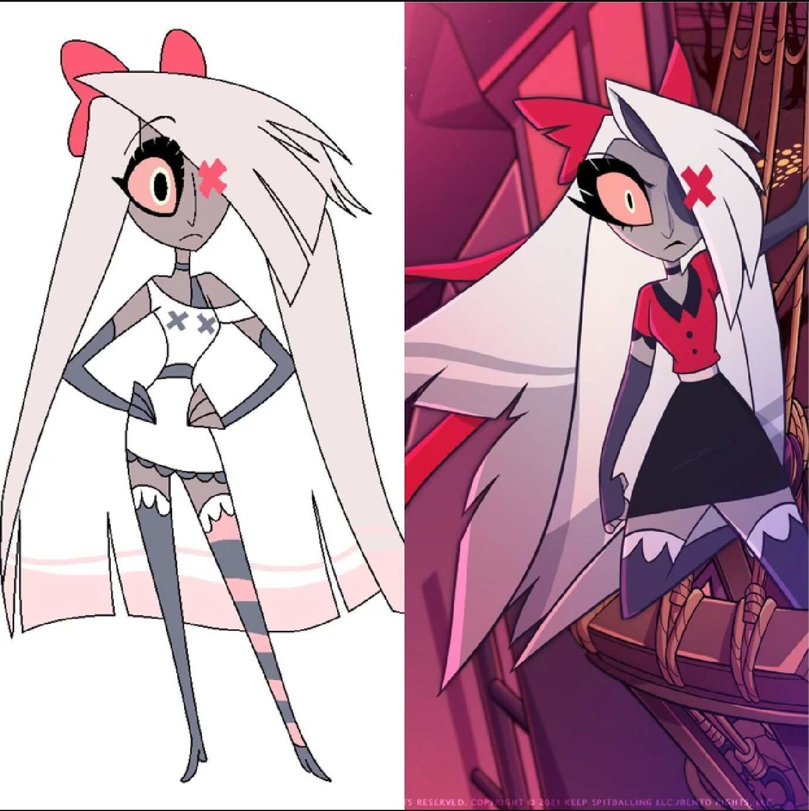

Vaggie (Charlie's Girlfriend)
설명
Vaggie는 Charlie의 가장 가까운 동료이자 연인으로, Hazbin Hotel 프로젝트를 전폭적으로 지지하고 있습니다. 그녀는 매우 직설적이고 열정적인 성격으로, 호텔의 안정을 해치는 위협에 단호하게 맞섭니다.
전투 능력이 뛰어나며, 때로는 Charlie의 낙천적인 태도에 현실적인 조언을 아끼지 않습니다.
그녀의 존재는 Charlie에게 큰 의지가 되며, 두 사람의 유대는 이야기의 중심적인 감정선 중 하나입니다.
디자인 정보
파일럿 버전
- 초기 파일럿 에피소드에 등장한 디자인은 조금 더 심플하고 카툰스러운 느낌이 있습니다.
- 주요 특징: 전체적으로 부드러운 색감과 가벼운 카툰체
공식 애니메이션 디자인
- 정식 시리즈에 사용된 디자인은 디테일에 신경을 쓴 점이 잘 보이며 캐릭터의 개성이 잘 드러납니다.
- 주요 변경점: 선명한 채도, 헤어 스타일과 유니폼